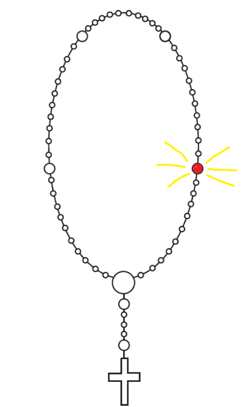

Povratak na početak
Utorak - 2. žalosno otajstvo


Druga desetica
- Isus, koji je za nas bičevan bio!
- Oče naš, koji jesi na nebesima, sveti se ime tvoje. Dođi kraljevstvo tvoje. Budi volja tvoja, kako na nebu tako i na zemlji. Kruh naš svagdanji daj nam danas, i otpusti nam duge naše, kako i mi otpuštamo dužnicima našim, i ne uvedi nas u napast, nego izbavi nas od zla.
Amen.